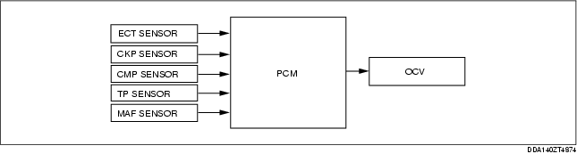

• Based on the signals from the input sensors, the PCM determines the valve timing suitable for the engine operation conditions, drives the OCV, and switches the hydraulic passages of the variable valve timing actuator to provide appropriate valve timing.
